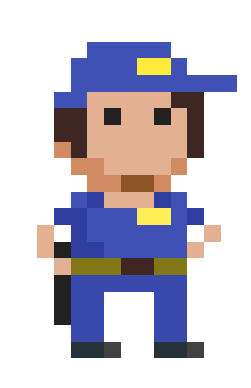

58 De anatomie van een klasse
Ik zal nu enkele basisconcepten van klassen en objecten toelichten aan de hand van praktische voorbeelden.
58.0.0.1 Object methoden
Stel dat we een klasse willen maken die ons toelaat om objecten te maken die verschillende mensen voorstellen. We willen aan iedere mens kunnen zeggen “Praat eens”.
We maken een nieuwe klasse Mens en plaatsen in de klasse een methode Praat:
internal class Mens
{
public void Praat()
{
Console.WriteLine("Ik ben een mens!");
}
}We zien twee nieuwe aspecten:
- Het keyword
staticmag je niet voor een methode signatuur zetten (later ontdekken we wanneer dat soms wel moet) . - Voor de methode plaatsen we
public: dit is een access modifier die aangeeft dat de buitenwereld deze methode op het object kan aanroepen.
Je kan nu elders objecten aanmaken en ieder object z’n methode Praat aanroepen:
Mens joske = new Mens();
Mens alfons = new Mens();
joske.Praat();
alfons.Praat();Er zal twee maal Ik ben een mens! op het scherm verschijnen. Waarbij joske en alfons zelf verantwoordelijk hiervoor waren dat dit gebeurde.
58.0.0.2 Access modifiers
De access modifier geeft aan hoe zichtbaar een bepaald deel van de klasse en de klasse zelf is. Wanneer je niet wilt dat “van buiten” een bepaalde methode kan aangeroepen worden, dan dien je deze als private in te stellen. Wil je dit net wel dat moet je er expliciet public of internal voor zetten.
Test in de voorgaande klasse eens wat gebeurt wanneer je public vervangt door private. Inderdaad, je zal de methode Praat niet meer op de objecten kunnen aanroepen.
Wanneer je geen access modifier voor een methode of klasse zet in C# dan zal deze als private beschouwd worden. Dit geldt voor alle zaken waar je access modifiers voor kan zetten: niets ervoor zetten wil zeggen private.
Volgende twee methoden-signaturen zijn dus identiek:
private void NiemandMagDitGebruiken()
{
//...
}
void NiemandMagDitGebruiken()
{
//...
}Het is een héél slechte gewoonte om géén access modifiers voor iedere methode te zetten. Maak er dus een gewoonte van dit steeds ogenblikkelijk te doen.
Test volgende klasse eens, kan je de methode VertelGeheim vanuit de Main op joske aanroepen?
internal class Mens
{
public void Praat()
{
Console.WriteLine("Ik ben een mens!");
}
private void VertelGeheim()
{
Console.WriteLine("Ik ben verliefd op Anneke");
}
}Access modifiers hebben een volgorde van de mate waarin ze beschermen. Aan het ene uiterste heb je private en aan de andere kant public. Daartussen zitten er nog enkele andere, allemaal met hun specifieke bestaansreden.
Klassen zijn ofwel public oftewel internal. Indien je niets voor de klasse zet dan is deze internal. Concreet wil dit zeggen dat een internal klasse enkel binnen het huidige project (de assembly) kunt gebruiken.
Onderdelen (hoofdzakelijk methoden en datavelden) in een klasse kunnen volgende modifiers hebben:
private: het meest beschermdend. Enkel zichtbaar in de klasse zelf. Dit is de standaardwaarde als je geen access modifier expliciet schrijft.protected: enkel zichtbaar voor overgeërfde klassen (zie hoofdstuk 16).public: het meest open. Iedereen kan hier aan…en dat raden we ten stelligste af.
Er zijn er nog enkele andere (protected internal, private internal en file), maar die bespreken we niet in dit boek.
58.0.0.3 Reden van private
Waarom zou je bepaalde zaken private maken?
De code binnenin een klasse kan overal aan binnen de klasse zelf. Stel dat je dus een erg complexe publieke methode hebt, en je wil deze opsplitsen in meerdere delen, dan ga je die andere delen private maken. Dit voorkomt dat programmeurs die je klasse later gebruiken, stukken code aanroepen die helemaal niet bedoeld zijn om rechtstreeks aan te roepen.
Volgende voorbeeld toont hoe je binnenin een klasse andere zaken van de klasse kunt aanroepen: we roepen in de methode Praat de methode VertelGeheim aan. Dit kan want private geldt enkel voor de buitenwereld van de klasse, maar dus niet voor de code binnen de Praat-methode zelf.
internal class Mens
{
public void Praat()
{
Console.WriteLine("Ik ben een mens!");
VertelGeheim();
}
private void VertelGeheim()
{
Console.WriteLine("Ik ben verliefd op Anneke");
}
}Als we nu elders een object laten praten als volgt:
Mens rachid = new Mens();
rachid.Praat();Dan zal de uitvoer worden:
Ik ben een mens!
Ik ben verliefd op AnnekeMet behulp van de dot-operator (.) kunnen we aan alle informatie die ons object aanbiedt aan de buitenwereld. Ook dit zag je reeds toen je een Random-object hadden: we konden maar een handvol zaken aanroepen op zo’n object, waaronder de Next methode.
Het is natuurlijk een beetje vreemd dat nu al onze objecten zeggen dat ze verliefd zijn op Anneke. Dit is niet het smurfendorp met maar 1 meisje! Dit gaan we verderop oplossen. Stay tuned!
58.0.0.4 Instantievariabelen
Voorlopig doen alle objecten van het type Mens hetzelfde. Ze kunnen praten en zeggen hetzelfde.
We weten echter dat objecten ook een interne staat hebben die per object individueel is (we zagen dit reeds toen we balletjes over het scherm lieten botsen: ieder balletje onthield z’n eigen richtingsvector en positie). Dit kunnen we dankzij instantievariabelen (ook wel datavelden of datafields genoemd) oplossen. Dit zullen variabelen zijn waarin zaken kunnen bewaard worden die verschillen per object.
Stel je voor dat we onze mensen een geboortejaar willen geven. Ieder object zal zelf in een instantievariabele bijhouden wanneer ze geboren zijn (het vertellen van geheimen zullen we verderop behandelen):
internal class Mens
{
private int geboorteJaar = 1970; //instantievariabele
public void Praat()
{
Console.WriteLine("Ik ben een mens! ");
Console.WriteLine($"Ik ben geboren in {geboorteJaar}.");
}
}Enkele belangrijke concepten:
- De instantievariabele
geboorteJaarzetten we private: we willen niet dat de buitenwereld het geboortejaar van een object kan aanpassen. Beeld je in dat dat in de echte wereld ook kon. Dan zou je naar je kameraad kunnen roepen “Hey Adil, jouw geboortejaar is nu 1899! Ha!” Waarop Adil vloekend verandert in een steenoud mannetje. - We geven de variabele een beginwaarde
1970. Alle objecten zullen dus standaard in het jaar 1970 geboren zijn wanneer we deze metnewaanmaken. - We kunnen de inhoud van de instantievariabelen lezen en veranderen vanuit andere delen in de code. Zo gebruiken we
geboorteJaarin de tweede lijn van dePraatmethode. Als je die methode nu zou aanroepen dan zou het geboortejaar van het object dat je aanroept mee op het scherm verschijnen.
Ik moet ook dringend enkele extra niet-officiële identifier regels in het leven roepen:
- Klassenamen en methoden in klassen beginnen altijd met een hoofdletter.
- Alles dat
publicis in een klasse begint ook met een hoofdletter. - Alles dat
privateis begint met een kleine letter (of liggend streepje), tenzij het om een methode gaat, die begint altijd met een hoofdletter.
Dit zijn geen officiële regels, maar afspraken die veel programmeurs onderling hebben gemaakt. Het maakt de code leesbaarder.

Wat?! Ik ben hier niet voor jou? Omdat je geengotohebt gebruikt?! Flink hoor. Maar daarvoor ben ik hier niet. Ik zag je wel denken: “Als ik nu die instantievariabele ook eenspublicmaak.” Niet doen. Simpel! Instantievariabele mogen NOOITpublicgezet worden.De C# standaard laat dit weliswaar toe, maar dit is één van de slechtste programmeerdingen die je kan doen. Wil je toch de interne staat van een object kunnen aanpassen dan gaan we dat via properties en methoden kunnen doen, wat we zo meteen gaan uitleggen. Zie dat ik hier niet te vaak tussenbeide moet komen. Dank!
Ok, we zullen maar luisteren naar meneer de agent. Stel nu dat we een verjongingsstraal hebben. Hiermee kunnen we het geboortejaar van de mensen steeds met 1 jaar kunnen verhogen. We maken ze met andere woorden telkens een jaartje jonger!
internal class Mens
{
private int geboorteJaar = 1970;
public void Praat()
{
Console.WriteLine("Ik ben een mens! ");
Console.WriteLine($"Ik ben geboren in {geboorteJaar}.");
}
public void StartVerjongingskuur()
{
Console.WriteLine("Jeuj. Ik word jonger!");
geboorteJaar++;
}
}Zoals al gezegd: Ieder object zal z’n eigen geboortejaar hebben.
Die laatste opmerking is een kernconcept van OOP: ieder object heeft z’n eigen interne staat die kan aangepast worden individueel van de andere objecten van hetzelfde type. We zullen dit testen in volgende voorbeeld waarin we 2 objecten maken en enkel 1 ervan verjongen. Kijk wat er gebeurt:
Mens elvis = new Mens();
Mens bono = new Mens();
elvis.StartVerjongingskuur();
elvis.Praat();
bono.Praat();Als je voorgaande code zou uitvoeren zal je zien dat het geboortejaar van Elvis verhoogd en niet die van Bono wanneer we StartVerjongingskuur aanroepen. Zoals het hoort!
De uitvoer zal zijn:
Jeuj. Ik word jonger!
Ik ben een mens!
Ik ben geboren in 1971.
Ik ben een mens!
Ik ben geboren in 1970.
“Ja maar, nu pas je toch het geboortejaar van buiten aan via een methode, ook al gaf je aan dat dit niet de bedoeling was want dan zou je Adil ogenblikkelijk erg jong kunnen maken.”
Correct. Maar dat was dus maar een voorbeeld. De hoofdreden dat we instantievariabelen niet zomaar public mogen maken is om te voorkomen dat de buitenwereld instantievariabelen waarden geeft die de werking van de klasse zouden stuk maken. Stel je voor dat je dit kon doen: adil.geboortejaar = -12000;
Dit kan nefaste gevolgen hebben voor de klasse.
Daarom gaan we de toegang tot instantievariabelen als het ware controleren door deze enkel via properties en methoden toe te laten. We zouden dan bijvoorbeeld het volgende kunnen doen:
internal class Mens
{
private int geboorteJaar = 1970;
public void VeranderGeboortejaar(int geboorteJaarIn)
{
if(geboorteJaarIn >= 1900)
geboorteJaar = geboorteJaarIn;
}
//...Mooi he. Zo voorkomen we dus dat de buitenwereld illegale waarden aan een variabele kan geven. In dit voorbeeld kunnen mensen dus niet voor het jaar 1900 geboren zijn. Objecten zijn verantwoordelijk voor zichzelf en moeten zichzelf dus ook beschermen zodat de buitenwereld niets met hen doet dat hun eigen werking om zeep helpt.
58.0.0.5 Andere lieven
We kunnen nu het probleem oplossen dat al onze mensen verliefd zijn op Anneke. Volgende code toont dit:
internal class Mens
{
private string lief = "niemand";
public void VeranderLief(string nieuwLief)
{
lief = nieuwLief;
}
public void Praat()
{
Console.WriteLine("Ik ben een mens!");
VertelGeheim();
}
private void VertelGeheim()
{
if( lief != "niemand")
Console.WriteLine($"Ik ben verliefd op {lief}.");
else
Console.WriteLine("Ik ben op niemand verliefd.");
}
}Nu kunnen we dus “Temptation Island - de OOP editie” beginnen:
Mens deelnemer1 = new Mens();
Mens deelnemer2 = new Mens();
deelnemer1.Praat();
deelnemer2.Praat();
deelnemer2.VeranderLief("Phoebe");
deelnemer1.Praat();
deelnemer2.Praat();
deelnemer1.VeranderLief("Camilla");
deelnemer1.Praat();
deelnemer2.Praat();De uitvoer van voorgaande code zal zijn:
Ik ben een mens!
Ik ben op niemand verliefd.
Ik ben een mens!
Ik ben op niemand verliefd.
Ik ben een mens!
Ik ben op niemand verliefd.
Ik ben een mens!
Ik ben verliefd op Phoebe.
Ik ben een mens!
Ik ben verliefd op Camilla.
Ik ben een mens!
Ik ben verliefd op Phoebe.
Veel beginnende programmeurs maken fouten op het correct kunnen onderscheiden wat de klassen en wat de objecten in hun opgave juist zijn. Het is altijd belangrijk te begrijpen dat een klasse weliswaar beschrijft hoe alle objecten van dat type werken, maar op zich gaat die beschrijving steeds over 1 object uit de verzameling. Say what now?!
58.0.1 Klasse Studenten of Student?
Als je een klasse Student hebt, dan zal deze eigenschappen hebben zoals Punten, Naam en Geboortejaar. Als je een klasse Studenten daarentegen hebt, dan is dit vermoedelijk een klasse die beschrijft hoe een groep studenten moet werken in je applicatie. Mogelijk zal je dan properties hebben zoals KlasNaam, AantalAfwezigen, enz. Kortom, eigenschappen over de groep, niet over 1 student.
58.0.1.1 Level of Level1?
Een andere veelgemaakte fout is klassen te schrijven die maar exact één object kan en moet creëren. Dit soort klasse noemt een singleton. Stel je voor dat je een spel maakt waarin verschillende levels zijn. Een logische keuze zou dan zijn om een klasse Level te maken (niét Levels) die properties heeft zoals MoeilijkheidsGraad, HeeftGeheimeGrotten, AantalVijanden, enz.
Vervolgens kunnen we dan instanties maken: 1 object stelt 1 level in het spel voor. De speler kan dan van level naar level gaan en de code start dan bijvoorbeeld telkens de BeginLevel methode:
Level level1 = new Level();
level1.BeginLevel();Wat dus niet mag zijn klassen met namen zoals level1, level2, enz. Vermoedelijk hebben deze klasse 90% gelijkaardige code en is er dus een probleem met wat we de architectuur van je code noemen. Of duidelijker: je snapt niet wat het verschil is tussen klassen en objecten!
Objecten met namen zoals level1 en level2 zijn wél dus toegestaan, daar ze dan vermoedelijk allemaal van het type Level zijn. Maar opgelet: als je variabelen hebt die genummerd zijn (bv. bal1, bal2, enz.) dan is de kans groot dat je eigenlijk een array van objecten nodig hebt (wat ik in hoofdstuk 12 zal uitleggen).